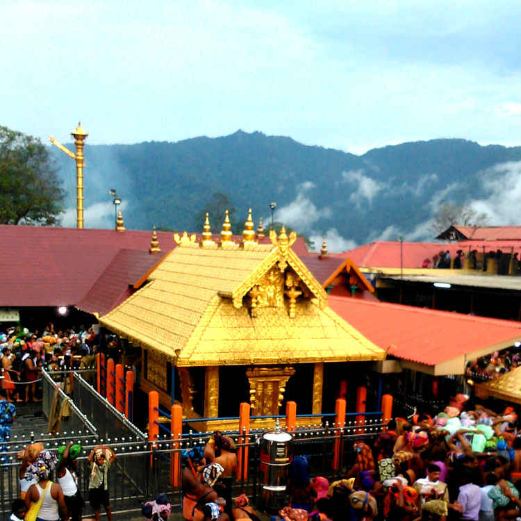

Kerala
The God's Own Country {Kerala}
Sabarimala
The Sabarimala Temple is a temple complex located at Sabarimala hill inside the Periyar Tiger Reserve in the Perinad Village, Pathanamthitta district, Kerala, India. It is one of the largest annual pilgrimage sites in the world with an estimate of over 40 to 50 million devotees visiting every year.

Cheraman Juma Masjid
The Cheramaan Juma Mosque is a mosque in Methala, Kodungallur, Thrissur in the Indian state of Kerala. A legend claims that it was built in 629 CE, which makes it the oldest mosque in the Indian subcontinent which is still in use.


Bekal Fort
Bekal Fort is a medieval fort built by Shivappa Nayaka of Keladi in 1650 AD, at Bekal. It is the largest fort in Kerala, spreading over 40 acres. The fort appears to emerge from the sea. Almost three quarters of its exterior is in contact with water. Bekal fort was not an administrative centre and does not include any palaces or mansions.